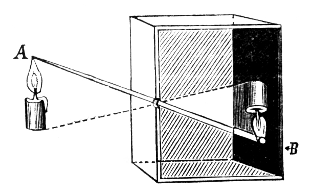
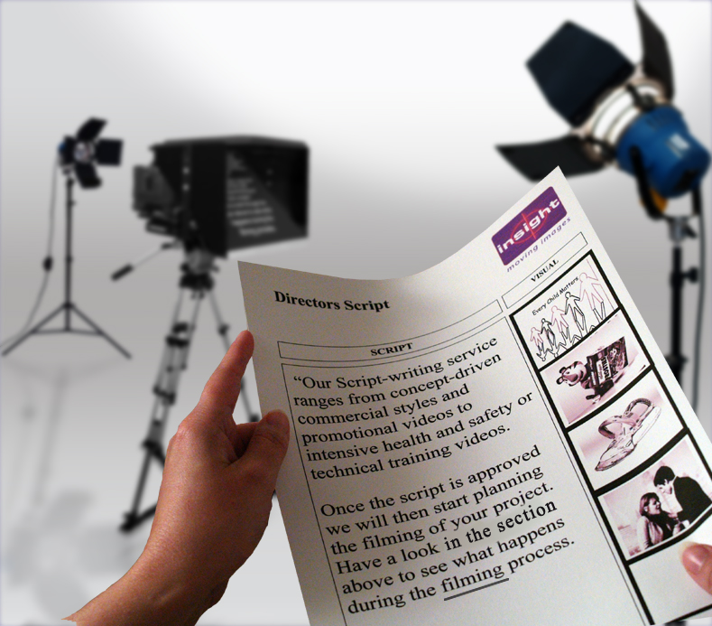
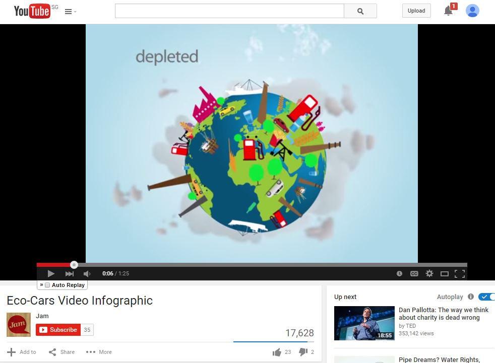

Video-Making
Producing great videos
the efficient & effective way
Prepared by Kenson
Learning Objectives
- Preparing the pitch - script, shotlist, storyboard
- ABCs - Building blocks of video
- The Director's toolkit - gearing up for the shoot
- Lights! Camera! Airplane mode!
- From Mess to Masterpiece
Presentation Formats
Screencast
External References
Activities (optional)
Lesson Plan
- Part 1 - Introduction
- Part 2 - Pre-Production (2:00)
- Part 3 - Storyboarding (2:00)
- Part 4 - Production (Film) (2:00)
- Part 5 - Production (Animation) (2:00)
- Part 6 - Post-Production (2:00)
"Filmmaking is a huge privilege; it's not brain surgery. It's art, and art is supposed to be an enjoyable process, and it is an enjoyable experience for me."
- Lake Bell
What is Video Making?
Filmmaking/ Media Creation/ Video Production
A Brief History
Early Photography

camera obsura
Advent of Motion Photography
sequence of still photos

motion photos
Editing, Sound and Color
Synchronised Sound & Color
Production Workflow: The 3 Ps + 1 D
Pre-Production
(Development)
Plot Development (Scripting)
Shots Planning
Camera Framing (Storyboarding)
Production
(Filming/Animating)
Stage Creation
Special Effects
Audio Gears
Post-Production
(Editing/Exporting)
Audio Foleys
Combining Everything (Editing)
Distribution

Export Formats
Sharing Channels
Copyright / Licensing
Video Genres
Animation
Animation
Stop-Motion